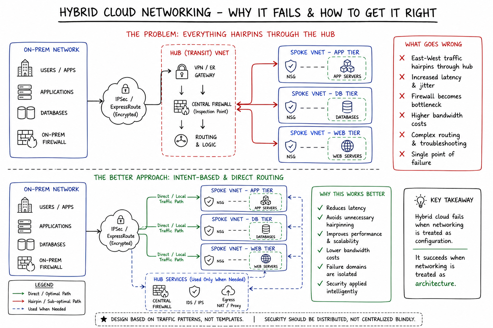

Why Hybrid Cloud Networking Fails in Real Environments
Hybrid cloud is not failing because of compute or storage.
It fails because of networking design decisions made too early — and never revisited.
Reality: Most architectures look perfect on diagrams, but break under real traffic patterns.
Reference Architecture
This represents a typical hybrid network design pattern used in enterprise environments.

1. Over-reliance on Default Routing
One of the most common mistakes is pushing everything through a single path using 0.0.0.0/0.
It looks clean. It centralizes control.
But in production:
- Latency increases
- Inspection becomes bottleneck
- Failure domains expand
Insight: Default routes simplify design—but amplify risk.
2. Hub-Spoke Without Traffic Understanding
Hub-spoke is widely used, but rarely understood deeply.
Teams assume all traffic should pass through the hub.
In reality:
- East-West traffic explodes
- Hairpinning creates inefficiencies
- Costs increase without visibility
Better approach: Design based on traffic patterns, not templates.
3. On-Prem and Cloud Are Treated as Equal
This is a subtle but critical mistake.
On-prem networks are stable and predictable.
Cloud networks are dynamic and ephemeral.
Trying to apply the same rules leads to:
- Routing complexity
- Asymmetric traffic
- Debugging nightmares
4. Security Becomes the Bottleneck
Everything routed via firewall sounds secure.
But:
- Throughput limits hit early
- Scaling becomes expensive
- Design becomes rigid
Key thought: Security should be distributed, not centralized blindly.
What Most Engineers Miss
Hybrid cloud is not about connecting two environments.
It’s about designing a system where:
- Traffic flows naturally
- Failures are isolated
- Scalability is built-in
Final Takeaway
Hybrid cloud fails when networking is treated as configuration.
It succeeds when networking is treated as architecture.
← Back to Home